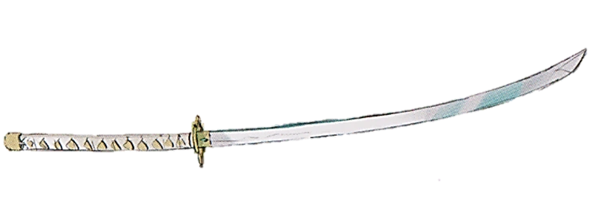

Description
Originally, the God Slaying Emperor Blade belonged to Warrior Takemikazuchi. He later gifted it to his creation Cocytus before he retired from YGGDRASIL.
The blade is an odachi with a length exceeding 180 centimeters.
- Abilities
Among the twenty-one weapons Cocytus has in his possession, it is the sharpest. It’s edge is so sharp that it can cleave through magical armor or even physical enhancement.
It has very high durability, even being used to cut down the lizardmen's hardest armor. In a way, it boasts the highest cutting power out of all Cocytus' weapons.
- Trivia
Cocytus only unsheathes this weapon to those he has the greatest respect for.
This weapon looks very different in both the manga and anime. It looks like a normal katana.
In the English publication of the Light Novel, the God Slaying Emperor Blade’s name was translated as Imperial Sword Zanshin.
|